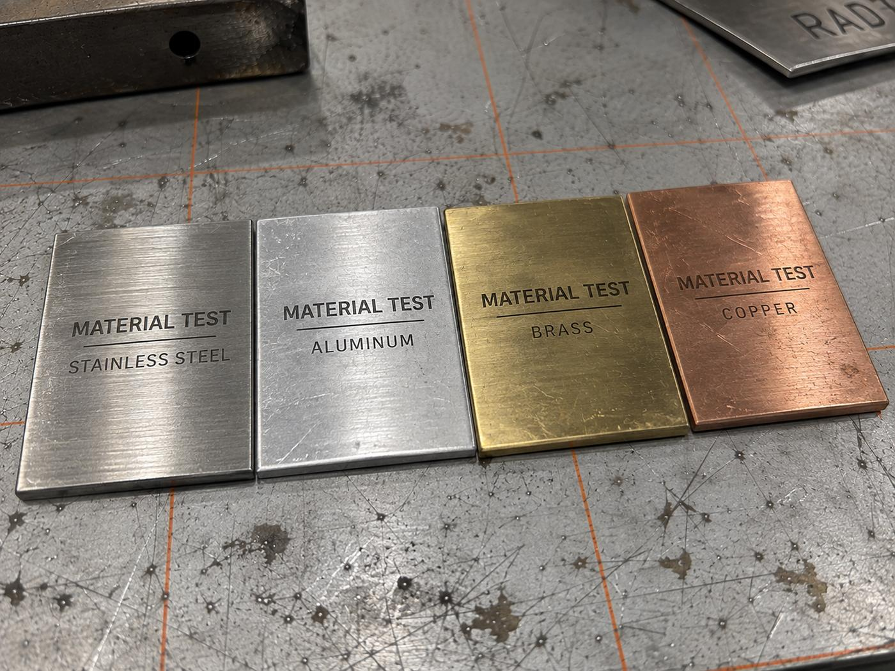
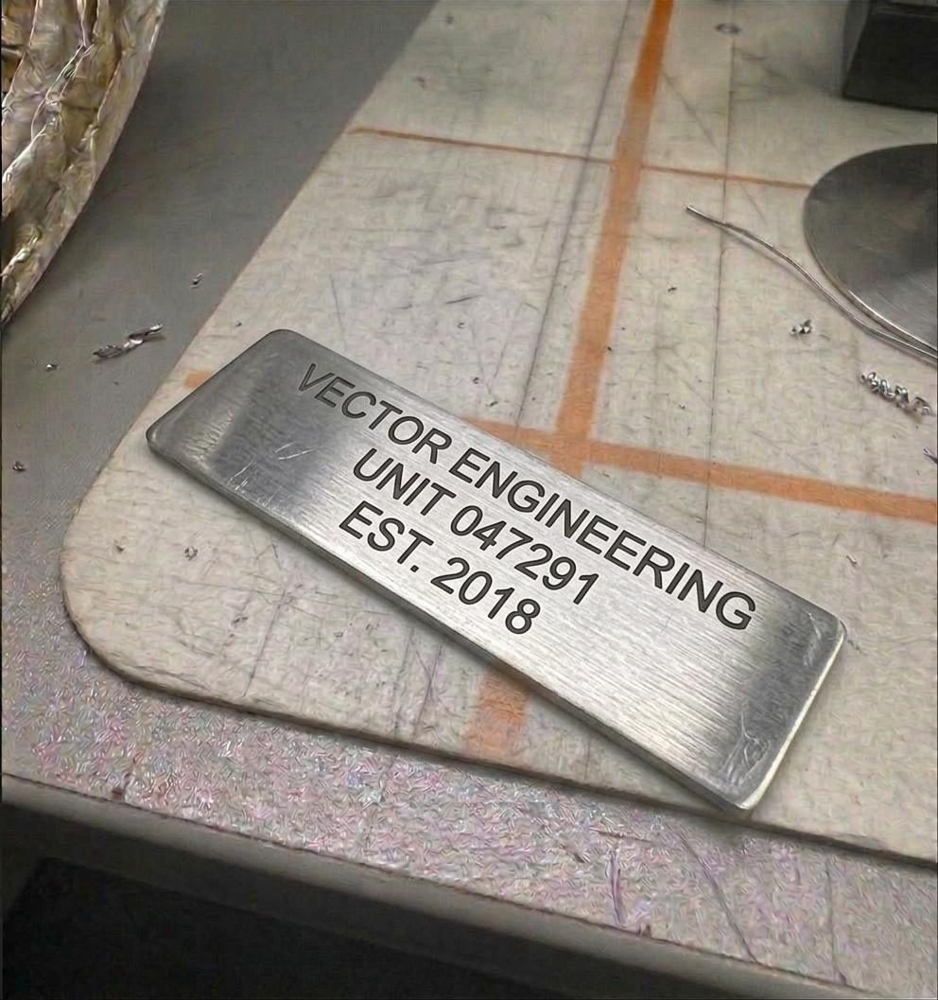
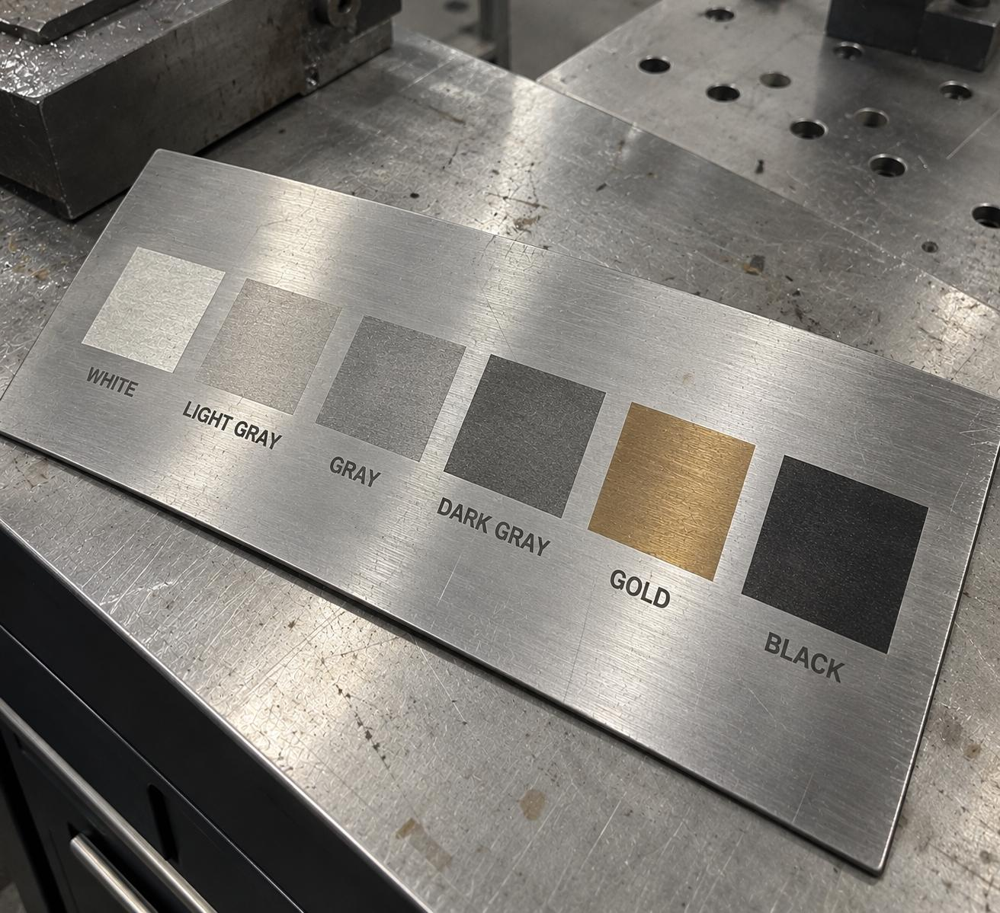
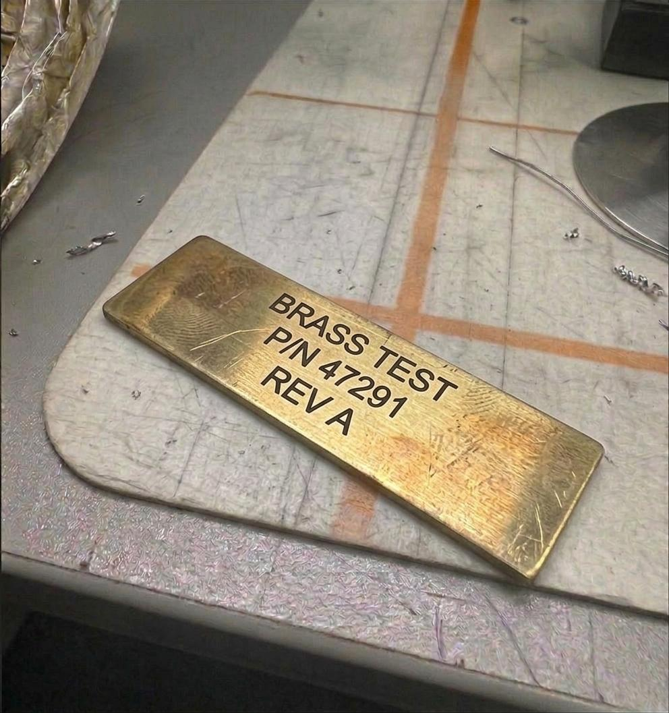
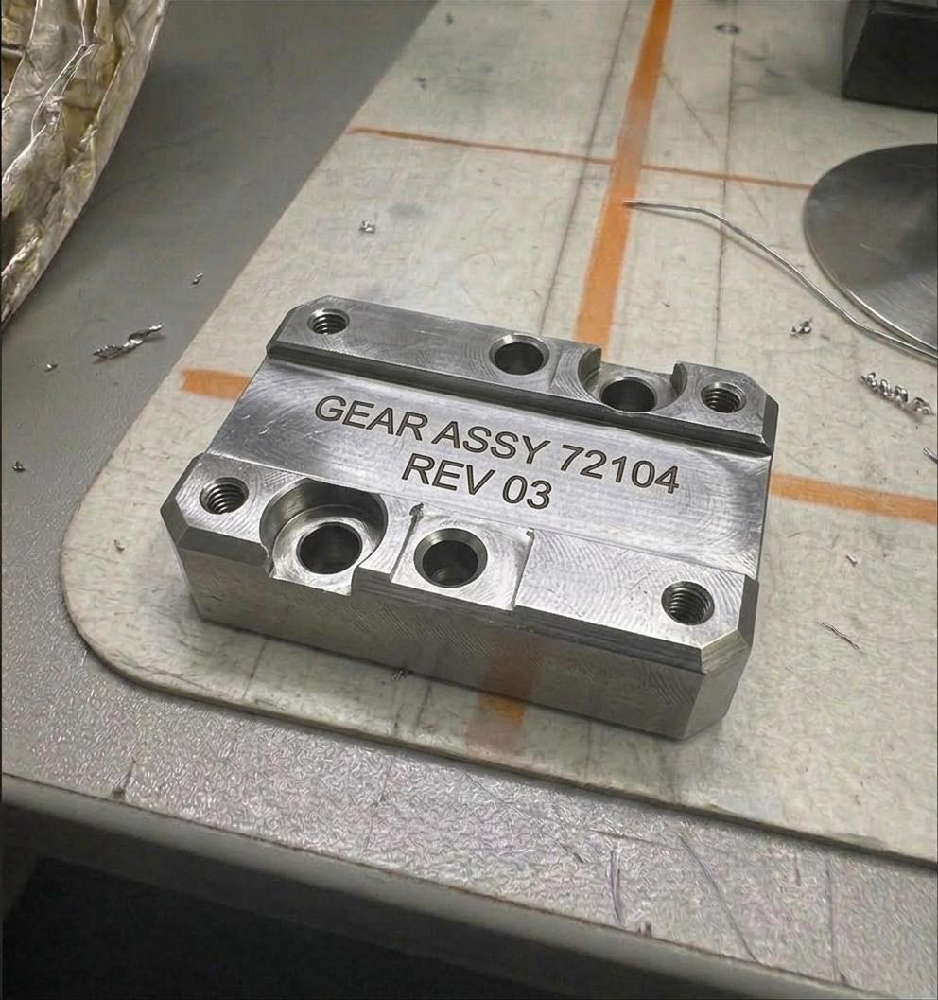
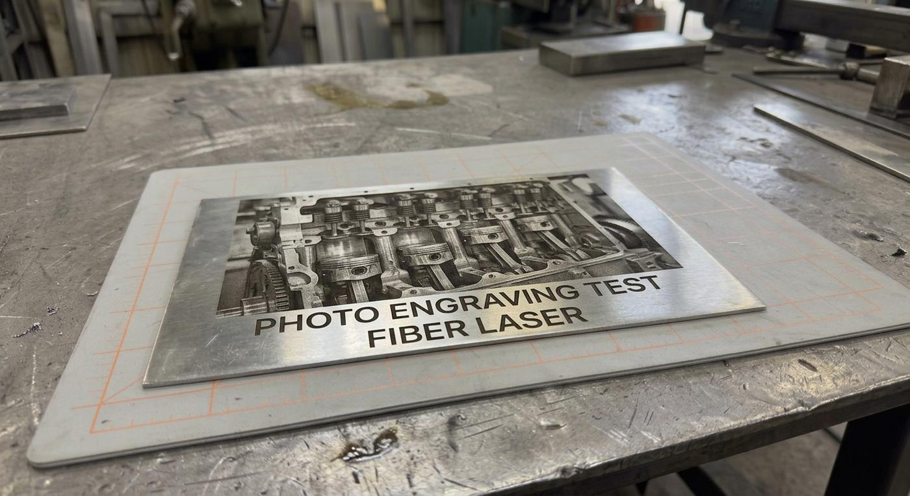
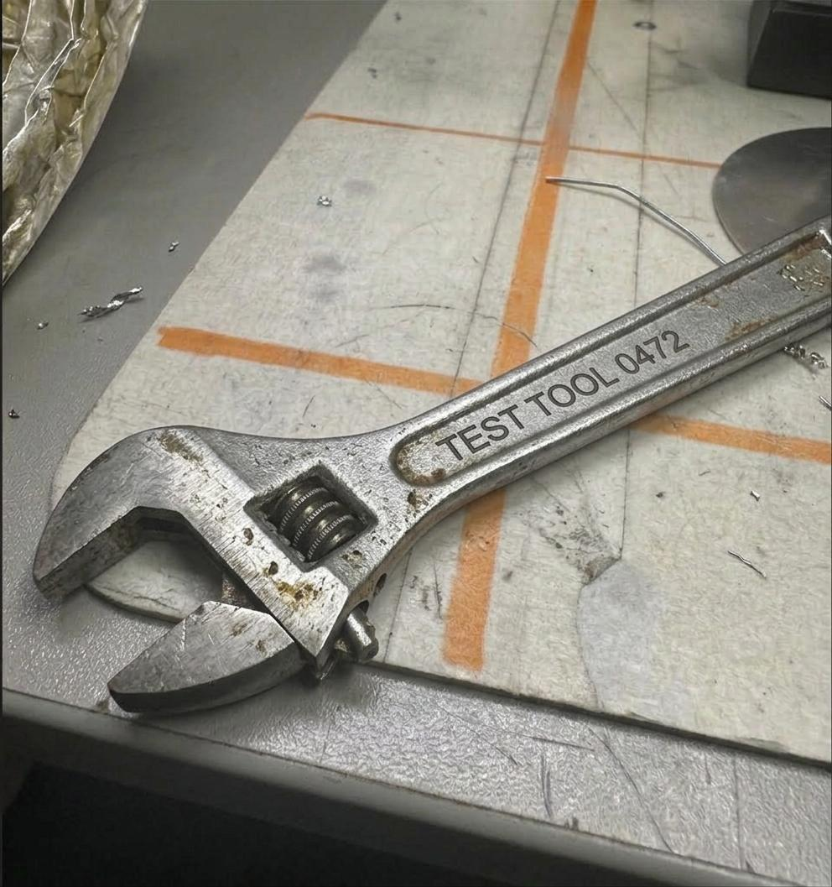

الشعارات وأسماء العلامات التجارية
نقش شعار شركتك على منتجاتك أو أدواتك أو هداياك الدعائية بتباين واضح يبرز على المعدن ولا يزول بالاستخدام.
حفر الشعارات على المنتجاتالحفر بالليزر يغيّر سطح المعدن نفسه، فالنتيجة لا تُمحى ولا تبهت ولا تتقشّر مثل الطباعة أو الملصقات. نحفر الشعارات والأسماء والأرقام التسلسلية وأكواد QR على الستانلس والحديد والألمنيوم والنحاس — من قطعة واحدة إلى آلاف القطع.

صفحات متخصصة داخل خدمة الحفر بالليزر
الحفر بالليزر عملية يُسلَّط فيها شعاع ليزر مركّز على سطح المعدن، فيغيّره في اللحظة نفسها: إما بإزالة طبقة رقيقة جداً فيصبح النقش غائراً محسوساً باليد، أو بتسخين السطح فيتغيّر لونه إلى الأسود أو الرمادي أو الأبيض دون إزالة أي مادة. في الحالتين النتيجة ليست حبراً فوق المعدن — بل المعدن نفسه صار مختلفاً.
هذا هو الفرق الجوهري بين الحفر بالليزر وبين الطباعة أو الاستيكر أو الحفر الكيميائي: الملصق يُنزع، والطباعة تُخدش وتزول مع المذيبات والشمس، أما النقش بالليزر فيبقى ما بقي المعدن — يتحمّل الحرارة والزيوت ومواد التنظيف والغسيل الصناعي والأشعة فوق البنفسجية.
في السوق السعودي تُستخدم عدة مسميات لنفس الخدمة تقريباً: «حفر ليزر»، «نقش ليزر»، «كتابة بالليزر»، و«فايبر ماركينق» (Fiber Laser Marking). كلها تشير إلى الأمر ذاته، والاختلاف بينها في عمق الأثر لا في التقنية.
لا تحتاج أن تعرف أي نوع يناسبك — أرسل لنا صورة القطعة وقل لنا أين ستُستخدم، ونحن نرشّح النوع والإعداد المناسبين قبل إصدار عرض السعر.
من لوحة بيانات واحدة لمصنع، إلى ألف قطعة تحمل شعار علامة تجارية — نفس الماكينة ونفس الدقة.
نقش شعار شركتك على منتجاتك أو أدواتك أو هداياك الدعائية بتباين واضح يبرز على المعدن ولا يزول بالاستخدام.
حفر الشعارات على المنتجاتلوحات المعدات والمواصفات الفنية والجهد والقدرة وسنة الصنع — منقوشة على ستانلس أو ألمنيوم تصمد في بيئة المصنع.
لوحات البيانات والأرقام التسلسليةترقيم متسلسل تلقائي لكل قطعة (Serial / Part No. / Lot) لتتبّع المخزون والضمان والصيانة بلا خطأ بشري.
تفاصيل الترقيم التسلسليأكواد تُقرأ بالجوال أو بالماسح الصناعي، منقوشة بدقة تكفي لقراءتها حتى بعد سنوات من الاستخدام.
حفر الباركود وأكواد QRأكثر المعادن طلباً للحفر — نقش أسود عالي التباين على 304 و316 دون الإضرار بمقاومته للصدأ.
حفر الستانلس ستيلترقيم الفلانشات والكراسي والتروس وأدوات العدّة، لتعرف كل قطعة ومكانها ومقاسها دون الرجوع لأي ملف.
تصنيع القطع الصناعيةشكل النقش وتباينه يختلفان باختلاف المعدن. هذا ما تتوقعه فعلياً قبل أن ترسل قطعتك.
| المعدن | شكل النتيجة | الأنسب لـ |
|---|---|---|
| ستانلس ستيل 304 / 316 | أسود عميق عالي التباين، أو رمادي فاتح، وأحياناً ألوان (ذهبي/أزرق) بإعدادات خاصة. | لوحات البيانات، المنتجات الفاخرة، تجهيزات المطاعم، الأدوات الطبية. |
| ألمنيوم | نقش أبيض فضّي واضح، ويمكن الوصول لأسود غامق على الألمنيوم المؤكسد (Anodized). | اللوحات الخفيفة، لوحات المعدات، أغلفة الأجهزة الإلكترونية. |
| حديد أسود / كربوني | نقش غائر واضح، ويُفضَّل الحفر بعمق لأن السطح غالباً يُطلى أو يصدأ سطحياً لاحقاً. | الهياكل الإنشائية، القوالب، قطع الغيار الثقيلة، أدوات الورش. |
| نحاس وبراص | تباين دافئ جميل بين النقش الداكن ولمعان المعدن — من أجمل النتائج بصرياً. | اللوحات التذكارية، الهدايا الفاخرة، القطع الديكورية والمفاتيح. |
| صفائح مجلفنة | نقش رمادي داكن واضح، مع مراعاة ألّا يخترق طبقة الجلفنة في المواضع المعرّضة للرطوبة. | لوحات التوجيه، صناديق الكهرباء، الأغطية والقنوات. |
| معادن مطلية أو مدهونة | الليزر يزيل الطلاء بدقة فيظهر لون المعدن تحته — تباين حادّ بلا أي حفر في المعدن نفسه. | لوحات التحكم، الأغطية المدهونة، القطع ذات الطلاء الإلكتروستاتيكي. |
غير متأكد من نوع معدنك؟ أرسل صورة القطعة — نتعرّف على المعدن غالباً من الصورة، وإن لزم ننفّذ عيّنة اختبار صغيرة قبل تنفيذ الكمية.
 أرقام القطع
أرقام القطع كود QR
كود QR
لوحة ستانلس
تدرّج التباين دقة الخطوط
دقة الخطوط
براص ونحاس
قطع مشغّلة
حفر الصور
ترقيم العدّةالصور نماذج وتصورات بصرية توضح إمكانيات الخدمة وأنواع النتائج، وليست بالضرورة طلبات عملاء بعينهم.
ترقيم القطع ولوحات المعدات ومتطلبات التتبّع والجودة التي تفرضها الأنظمة والعملاء الكبار.
نقش الشعار على المنتج نفسه بدل الملصق — يرفع القيمة المدركة ويمنع انتحال المنتج.
ترقيم العدّة والقطع المستبدلة وتوثيق تواريخ الصيانة على القطعة نفسها لا على ورقة تضيع.
لوحة باسم، هدية معدنية محفورة، أو قطعة واحدة فقط — نقبلها بلا حد أدنى للكمية.
أربع خطوات واضحة، وأنت على علم بالسعر والموعد قبل أن نبدأ.
صورة القطعة + ملف الشعار أو النص المطلوب + الكمية. واتساب يكفي — لا تحتاج بريداً رسمياً.
نرسل لك معاينة لشكل النقش على قطعتك مع السعر وموعد التسليم، قبل تنفيذ أي شيء.
نضبط القدرة والسرعة والتردد بما يناسب معدنك تحديداً، وننفّذ عيّنة أولى للاعتماد في الكميات الكبيرة.
فحص وضوح النقش وقابلية قراءة الأكواد بالماسح، ثم التغليف والتسليم داخل جدة أو الشحن.
طلبات الحفر غالباً عاجلة — قطعة ناقصة توقف خط إنتاج أو شحنة تنتظر لوحة بيانات.
قطعة واحدة تُنفَّذ بنفس جدّية ألف قطعة — كثير من الورش ترفض الطلبات الصغيرة، ونحن لا نرفضها.
ترى شكل النقش على قطعتك قبل أن نلمسها، فلا مفاجآت ولا قطع تالفة.
كل قطعة تُراجع بصرياً، وكل كود QR أو باركود يُجرَّب فعلياً بالماسح قبل خروجه.

ملف PDF يشرح خدمة الحفر والنقش بالليزر ومميزاتها، الاستخدامات الثمانية، المعادن التي ننقش عليها، معرض نماذج، ووعد أفضل سعر بشروطه.
نقصّ لك اللوحة أو القطعة بالمقاس المطلوب ثم نحفر عليها مباشرة — طلب واحد ومسؤولية واحدة.
اذهب إلى الصفحةوحدات ستانلس كاملة تصل محفورة بشعارك وبيانات المواصفة جاهزة للتركيب.
اذهب إلى الصفحةتصنيع القطعة حسب الرسم الهندسي مع ترقيمها التسلسلي في نفس دورة الإنتاج.
اذهب إلى الصفحةالسعر يُحسب على أساس ثلاثة عوامل: مساحة النقش وكثافة التصميم (شعار ممتلئ يستغرق وقتاً أطول من سطر نص)، نوع المعدن وعمق النقش المطلوب، والكمية — إذ ينخفض سعر القطعة كثيراً كلما زاد العدد لأن الإعداد يتم مرة واحدة. أرسل صورة القطعة والتصميم والكمية على واتساب وتصلك تسعيرة دقيقة عادةً في نفس يوم العمل، بدون أي التزام.
لا يوجد فرق في الخدمة — «فايبر ماركينق» (Fiber Laser Marking) هو الاسم التقني لنوع الماكينة المستخدمة، وهي ماكينة ليزر الفايبر المخصّصة للمعادن، بينما «حفر ليزر» و«نقش ليزر» هي التسميات الدارجة لنفس العمل في السوق السعودي. كل ما يصفه هذا الموقع من حفر ونقش على المعادن يُنفَّذ بماكينة فايبر ليزر. الفرق الحقيقي الوحيد هو في عمق الأثر: نقش سطحي، أو حفر غائر، أو حفر عميق.
لا. الحفر بالليزر يغيّر سطح المعدن نفسه ولا يضيف طبقة فوقه، لذلك لا يتقشّر ولا يُمحى بالمذيبات ولا يبهت بالشمس. يتحمّل الغسيل الصناعي والزيوت ومواد التنظيف والحرارة. الاستثناء الوحيد هو النقش السطحي الخفيف جداً على قطعة تتعرّض لاحتكاك ميكانيكي مستمر — ولهذا نرشّح الحفر الأعمق في تلك الحالات تحديداً.
نعم، ولا يوجد لدينا حد أدنى للكمية. نحفر قطعة واحدة بنفس الدقة والاهتمام اللذين نعطيهما لطلب من ألف قطعة. الفرق الوحيد أن تكلفة القطعة الواحدة أعلى نسبياً لأن وقت الإعداد والبرمجة يتم مرة واحدة سواء كانت قطعة أم مئة.
نحفر على جميع المعادن تقريباً: الستانلس ستيل بدرجاته، الحديد الأسود والكربوني، الألمنيوم العادي والمؤكسد، النحاس، البراص، التيتانيوم، والصفائح المجلفنة، إضافةً إلى المعادن المطلية والمدهونة. تخصّصنا هو المعادن تحديداً — أما الخشب والأكريليك والجلد فتحتاج تقنية ليزر مختلفة (CO₂) ولا تُعدّ من خدماتنا الأساسية، وإن كان طلبك منها نرشدك للجهة المناسبة.
الاستيكر يُنزع أو يتقشّر خلال أشهر في بيئة العمل، والطباعة تُخدش وتزول مع المذيبات وأشعة الشمس. الحفر بالليزر يبقى ما بقيت القطعة لأنه جزء من المعدن نفسه. لهذا تشترط كثير من المواصفات الصناعية وعقود التوريد أن يكون التعريف محفوراً لا مطبوعاً، خصوصاً في قطع الغيار والمعدات التي تتطلّب تتبّعاً.
نبدأ التنفيذ خلال ٦ ساعات من اعتماد عرض السعر والتصميم. الطلبات الصغيرة (قطعة إلى عشرات القطع) تُسلَّم عادةً في نفس اليوم أو اليوم التالي. الكميات الكبيرة تعتمد على العدد وعلى كثافة التصميم، ونحدّد لك موعداً واضحاً في عرض السعر ونلتزم به.
ليس بالضرورة. الأفضل ملف متجه (AI أو SVG أو PDF أو DXF) لأنه يعطي أنظف نتيجة بأي مقاس، لكن صورة PNG واضحة عالية الدقة تكفي في معظم الطلبات. وإن كان لديك شعار بصيغة صورة فقط، نستطيع إعادة رسمه متجهاً — أخبرنا بذلك عند الطلب.
النقش السطحي (Black Marking) لا يزيل طبقة الكروم الواقية ولا يؤثر على مقاومة الصدأ إذا نُفّذ بإعدادات صحيحة، وهو ما نستخدمه للقطع التي تعمل في بيئات رطبة أو غذائية. أما الحفر العميق فيصل إلى ما تحت الطبقة الواقية، ولهذا لا نرشّحه للقطع المعرّضة للماء المالح إلا مع معالجة لاحقة (تخميل) — ونخبرك بذلك قبل التنفيذ لا بعده.
صورة القطعة + الشعار أو النص + الكمية — وتصلك التسعيرة ومعاينة لشكل النقش، عادةً في نفس يوم العمل.
أرسل تصميمك الآن واحصل على معاينة وعرض سعر — بدون أي التزام، ومن قطعة واحدة.